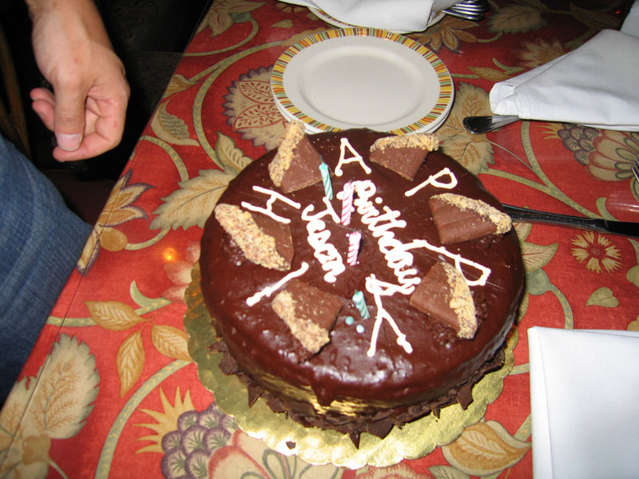

The Awakening
A green and yellow parrot, which hung in a cage outside the door, kept repeating over and over:
“Allez vous-en! Allez vous-en! Sapristi! That’s all right!”
He could speak a little Spanish, and also a language which nobody understood, unless it was the mocking-bird that hung on the other side of the door, whistling his fluty notes out upon the breeze with maddening persistence.
Mr. Pontellier, unable to read his newspaper with any degree of comfort, arose with an expression and an exclamation of disgust.

He walked down the gallery and across the narrow “bridges” which connected the Lebrun cottages one with the other. He had been seated before the door of the main house. The parrot and the mockingbird were the property of Madame Lebrun, and they had the right to make all the noise they wished. Mr. Pontellier had the privilege of quitting their society when they ceased to be entertaining.
He stopped before the door of his own cottage, which was the fourth one from the main building and next to the last. Seating himself in a wicker rocker which was there, he once more applied himself to the task of reading the newspaper. The day was Sunday; the paper was a day old. The Sunday papers had not yet reached Grand Isle. He was already acquainted with the market reports, and he glanced restlessly over the editorials and bits of news which he had not had time to read before quitting New Orleans the day before.
Mr. Pontellier wore eye-glasses. He was a man of forty, of medium height and rather slender build; he stooped a little. His hair was brown and straight, parted on one side. His beard was neatly and closely trimmed.
Once in a while he withdrew his glance from the newspaper and looked about him. There was more noise than ever over at the house. The main building was called “the house,” to distinguish it from the cottages. The chattering and whistling birds were still at it. Two young girls, the Farival twins, were playing a duet from “Zampa” upon the piano. Madame Lebrun was bustling in and out, giving orders in a high key to a yard-boy whenever she got inside the house, and directions in an equally high voice to a dining-room servant whenever she got outside. She was a fresh, pretty woman, clad always in white with elbow sleeves. Her starched skirts crinkled as she came and went. Farther down, before one of the cottages, a lady in black was walking demurely up and down, telling her beads. A good many persons of the pension had gone over to the Cheniere Caminada in Beaudelet’s lugger to hear mass. Some young people were out under the wateroaks playing croquet. Mr. Pontellier’s two children were there--sturdy little fellows of four and five. A quadroon nurse followed them about with a faraway, meditative air.
Mr. Pontellier finally lit a cigar and began to smoke, letting the paper drag idly from his hand. He fixed his gaze upon a white sunshade that was advancing at snail’s pace from the beach. He could see it plainly between the gaunt trunks of the water-oaks and across the stretch of yellow camomile. The gulf looked far away, melting hazily into the blue of the horizon. The sunshade continued to approach slowly. Beneath its pink-lined shelter were his wife, Mrs. Pontellier, and young Robert Lebrun. When they reached the cottage, the two seated themselves with some appearance of fatigue upon the upper step of the porch, facing each other, each leaning against a supporting post.
“What folly! to bathe at such an hour in such heat!” exclaimed Mr. Pontellier. He himself had taken a plunge at daylight. That was why the morning seemed long to him.
“You are burnt beyond recognition,” he added, looking at his wife as one looks at a valuable piece of personal property which has suffered some damage. She held up her hands, strong, shapely hands, and surveyed them critically, drawing up her fawn sleeves above the wrists. Looking at them reminded her of her rings, which she had given to her husband before leaving for the beach. She silently reached out to him, and he, understanding, took the rings from his vest pocket and dropped them into her open palm. She slipped them upon her fingers; then clasping her knees, she looked across at Robert and began to laugh. The rings sparkled upon her fingers. He sent back an answering smile.
“What is it?” asked Pontellier, looking lazily and amused from one to the other. It was some utter nonsense; some adventure out there in the water, and they both tried to relate it at once. It did not seem half so amusing when told. They realized this, and so did Mr. Pontellier. He yawned and stretched himself. Then he got up, saying he had half a mind to go over to Klein’s hotel and play a game of billiards.
“Come go along, Lebrun,” he proposed to Robert. But Robert admitted quite frankly that he preferred to stay where he was and talk to Mrs. Pontellier.
“Well, send him about his business when he bores you, Edna,” instructed her husband as he prepared to leave.
“Here, take the umbrella,” she exclaimed, holding it out to him. He accepted the sunshade, and lifting it over his head descended the steps and walked away.
“Coming back to dinner?” his wife called after him. He halted a moment and shrugged his shoulders. He felt in his vest pocket; there was a ten-dollar bill there. He did not know; perhaps he would return for the early dinner and perhaps he would not. It all depended upon the company which he found over at Klein’s and the size of “the game.” He did not say this, but she understood it, and laughed, nodding good-by to him.
Both children wanted to follow their father when they saw him starting out. He kissed them and promised to bring them back bonbons and peanuts.
